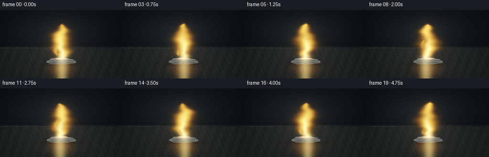
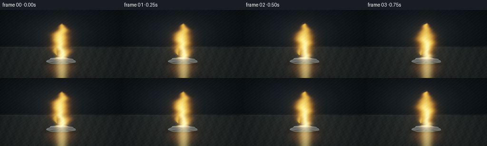

CODING AGENTS AS PIXEL WORLD MODELS
traex/DeepSeek-V4.1-Flash · phygen_129
点击播放 · 原生 RGB 像素
逐轮保存的候选
回放视频、检查图与代码变化。
每份候选均可单独播放。实际图片检查记录在下方工具轨迹中。
候选 01播放与检查图
点击播放 · 原生 RGB 像素

展开代码变化
--- 上一保存版本
+++ 本次保存版本
@@ -0,0 +1,311 @@
+from pathlib import Path
+
+import numpy as np
+from PIL import Image
+from scipy.ndimage import gaussian_filter
+
+import artifact_io
+
+
+ROOT = Path(__file__).resolve().parent
+WIDTH, HEIGHT = 256, 144
+FRAMES, FPS = 20, 4.0
+SS = 4
+W, H = WIDTH * SS, HEIGHT * SS
+
+
+def smoothstep(a, b, x):
+ t = np.clip((x - a) / (b - a), 0.0, 1.0)
+ return t * t * (3.0 - 2.0 * t)
+
+
+def normalize(v):
+ return v / np.maximum(np.linalg.norm(v, axis=0, keepdims=True), 1e-7)
+
+
+def splat(image, cx, cy, sx, sy, color, strength=1.0):
+ radius = int(max(sx, sy) * 3.2) + 2
+ x0 = max(0, int(cx) - radius)
+ x1 = min(W, int(cx) + radius + 1)
+ y0 = max(0, int(cy) - radius)
+ y1 = min(H, int(cy) + radius + 1)
+ if x0 >= x1 or y0 >= y1:
+ return
+ yy, xx = np.mgrid[y0:y1, x0:x1]
+ g = np.exp(-0.5 * (((xx - cx) / sx) ** 2 + ((yy - cy) / sy) ** 2))
+ image[y0:y1, x0:x1] += g[..., None] * np.asarray(color, dtype=np.float32) * strength
+
+
+def make_background(X, Y):
+ upper = np.stack(
+ [
+ 0.018 + 0.020 * (1.0 - Y),
+ 0.028 + 0.028 * (1.0 - Y),
+ 0.036 + 0.035 * (1.0 - Y),
+ ],
+ axis=-1,
+ )
+ lower = np.stack(
+ [
+ 0.078 + 0.028 * (Y - 0.52),
+ 0.092 + 0.028 * (Y - 0.52),
+ 0.091 + 0.026 * (Y - 0.52),
+ ],
+ axis=-1,
+ )
+ plane = smoothstep(0.515, 0.565, Y + 0.004 * np.sin(13.0 * X))
+ image = upper * (1.0 - plane[..., None]) + lower * plane[..., None]
+
+ # Soft overhead work light and a restrained, wide pool of warm bounce.
+ lamp = np.exp(-(((X - 0.45) / 0.34) ** 2 + ((Y - 0.34) / 0.28) ** 2))
+ image += lamp[..., None] * np.array([0.040, 0.048, 0.050], dtype=np.float32)
+ image += np.exp(-(((X - 0.50) / 0.24) ** 2 + ((Y - 0.76) / 0.22) ** 2))[..., None] * np.array(
+ [0.030, 0.024, 0.016], dtype=np.float32
+ )
+
+ # Matte ceramic grain, kept low contrast so it survives the downscale.
+ grain = (
+ 0.010 * np.sin(81.0 * X + 17.0 * Y)
+ + 0.007 * np.sin(157.0 * X - 39.0 * Y + 1.7)
+ + 0.004 * np.sin(333.0 * X + 71.0 * Y + 0.8)
+ )
+ image += (grain * plane)[..., None] * np.array([0.62, 0.70, 0.68], dtype=np.float32)
+
+ # A faint horizontal lip keeps the bench plane legible at this resolution.
+ lip = np.exp(-((Y - 0.553) / 0.0035) ** 2) * (0.55 + 0.45 * np.cos(3.0 * X))
+ image += lip[..., None] * np.array([0.060, 0.065, 0.060], dtype=np.float32)
+ return image.astype(np.float32)
+
+
+def body_geometry(p, X, Y):
+ x0 = 0.500 + 0.003 * np.sin(0.7 * p)
+ y0 = 0.748 - 0.002 * p
+ rx = 0.119 * (1.0 - 0.028 * p)
+ ry = 0.050 * (1.0 - 0.020 * p)
+ theta = np.arctan2((Y - y0) / ry, (X - x0) / rx)
+ rho = np.sqrt(((X - x0) / rx) ** 2 + ((Y - y0) / ry) ** 2)
+ edge = (
+ 1.0
+ + 0.075 * np.sin(3.0 * theta + 0.35)
+ + 0.040 * np.sin(7.0 * theta - 1.10)
+ + 0.022 * np.sin(11.0 * theta + 2.05)
+ )
+ mask = smoothstep(1.012, 0.972, rho / edge)
+ inner = np.clip(1.0 - (rho / edge) ** 2, 0.0, 1.0)
+ height = (
+ 0.90 * np.sqrt(inner)
+ + 0.055 * np.sin(8.0 * theta + 1.3) * np.sqrt(inner)
+ + 0.025 * np.sin(19.0 * theta - 0.8) * np.sqrt(inner)
+ )
+ return x0, y0, rx, ry, theta, rho, edge, mask, height
+
+
+def render_body(p, X, Y, mask, height, theta):
+ gy, gx = np.gradient(height)
+ normal = normalize(np.stack([-2.3 * gx, -2.3 * gy, np.ones_like(height)], axis=0))
+ nx, ny, nz = normal
+
+ # A broad cool key reveals the freshly cut metal; the flame supplies a warm rim.
+ cool = normalize(np.array([-0.55, -0.72, 0.75], dtype=np.float32))
+ key = np.clip(nx * cool[0] + ny * cool[1] + nz * cool[2], 0.0, 1.0)
+ flame_l = normalize(np.array([0.0, 0.88, 0.46], dtype=np.float32))
+ warm = np.clip(nx * flame_l[0] + ny * flame_l[1] + nz * flame_l[2], 0.0, 1.0)
+
+ facet = 0.86 + 0.12 * np.sin(7.0 * theta + 0.2) + 0.055 * np.sin(15.0 * theta - 1.2)
+ silver = np.array([0.53, 0.58, 0.59], dtype=np.float32)
+ rgb = silver * (0.24 + 0.49 * key + 0.34 * warm)[..., None] * facet[..., None]
+
+ half_cool = normalize(cool + np.array([0.0, 0.0, 1.0], dtype=np.float32))
+ half_warm = normalize(flame_l + np.array([0.0, 0.0, 1.0], dtype=np.float32))
+ spec_cool = np.clip(nx * half_cool[0] + ny * half_cool[1] + nz * half_cool[2], 0.0, 1.0) ** 34
+ spec_warm = np.clip(nx * half_warm[0] + ny * half_warm[1] + nz * half_warm[2], 0.0, 1.0) ** 20
+ rgb += spec_cool[..., None] * np.array([0.48, 0.54, 0.58], dtype=np.float32) * 0.80
+ rgb += spec_warm[..., None] * np.array([0.95, 0.62, 0.16], dtype=np.float32) * 0.55
+
+ # Edge rim and dark underside give the lump enough mass to read as metal.
+ rim = np.clip(mask - gaussian_filter(mask, 3.0), 0.0, 1.0)
+ rgb += rim[..., None] * np.array([0.38, 0.42, 0.41], dtype=np.float32)
+ rgb *= (1.0 - 0.28 * smoothstep(0.747, 0.804, Y))[..., None]
+
+ # The flame contact zone heats a small patch to a molten, incandescent cap.
+ hot = np.exp(-(((X - 0.500) / 0.058) ** 2 + ((Y - 0.710) / 0.018) ** 2) * 1.7)
+ hot *= mask
+ rgb += hot[..., None] * np.array([1.45, 0.68, 0.10], dtype=np.float32)
+ rgb += (hot**2)[..., None] * np.array([0.85, 0.64, 0.24], dtype=np.float32)
+ return rgb * mask[..., None]
+
+
+def render_smoke(p, t, X, Y, image):
+ smoke = np.zeros((H, W), dtype=np.float32)
+ for i in range(15):
+ life = 2.45 + 0.22 * (i % 4)
+ phase = (t / life + i / 15.0) % 1.0
+ fade = np.sin(np.pi * phase) ** 0.8 * (1.0 - phase) ** 0.28
+ cx = 0.500 + (0.012 + 0.020 * np.sin(i * 2.3)) * np.sin(3.4 * phase + i * 0.91)
+ cx += 0.018 * np.sin(2.2 * t + i * 1.7) * phase
+ cy = 0.645 - 0.46 * phase
+ sx = 0.016 + 0.040 * phase
+ sy = 0.030 + 0.058 * phase
+ wisps = np.exp(-0.5 * (((X - cx) / sx) ** 2 + ((Y - cy) / sy) ** 2))
+ wisps *= 0.72 + 0.28 * np.sin(35.0 * X + 27.0 * Y + i * 1.9 + 1.8 * t)
+ smoke += wisps * fade * (0.075 + 0.018 * (i % 3))
+ smoke = np.clip(smoke, 0.0, 0.22)
+ smoke *= smoothstep(0.55, 0.64, 0.73 - Y)
+ smoke_color = np.array([0.26, 0.255, 0.235], dtype=np.float32)
+ return image * (1.0 - smoke[..., None]) + smoke_color * smoke[..., None]
+
+
+def render_flame(p, t, X, Y, image):
+ x0 = 0.500 + 0.003 * np.sin(0.7 * p)
+ base = 0.704
+ height = 0.492 + 0.010 * np.sin(1.4 * t + 0.3)
+ u = (base - Y) / height
+ valid = smoothstep(-0.055, 0.015, u) * (1.0 - smoothstep(0.965, 1.035, u))
+ uc = np.clip(u, 0.0, 1.0)
+
+ center = x0
+ center += 0.010 * np.sin(7.5 * uc - 1.25 * t + 0.7)
+ center += 0.006 * np.sin(17.0 * uc + 2.2 * t - 0.4)
+ center += 0.003 * np.sin(31.0 * uc - 1.3 * t + 1.4)
+
+ edge_noise = (
+ 0.52 * np.sin(15.0 * X + 11.0 * Y + 2.3 * t)
+ + 0.30 * np.sin(31.0 * X - 19.0 * Y - 1.5 * t + 0.8)
+ + 0.18 * np.sin(57.0 * X + 27.0 * Y + 0.7 * t + 2.0)
+ )
+ envelope = (np.sin(np.pi * uc) ** 0.56) * (1.0 - 0.22 * uc)
+ width = 0.008 + 0.076 * envelope * (0.90 + 0.13 * edge_noise)
+ width *= 1.0 + 0.10 * np.sin(11.0 * uc + 1.9 * t)
+ dx = X - center
+
+ body = np.exp(-1.65 * (dx / np.maximum(width, 1e-4)) ** 2)
+ body *= valid
+ body *= 0.82 + 0.18 * np.sin(24.0 * X + 18.0 * Y - 2.0 * t + 1.2)
+ body = np.clip(body, 0.0, 1.0)
+
+ # A second, shorter tongue gives the flame an asymmetric, live silhouette.
+ side_u = (0.662 - Y) / 0.245
+ side_valid = smoothstep(-0.04, 0.02, side_u) * (1.0 - smoothstep(0.86, 1.02, side_u))
+ side_center = x0 - 0.034 - 0.010 * np.sin(7.0 * np.clip(side_u, 0, 1) + 1.7 * t)
+ side_width = 0.004 + 0.032 * np.sin(np.pi * np.clip(side_u, 0, 1)) ** 0.7
+ side = np.exp(-1.9 * ((X - side_center) / np.maximum(side_width, 1e-4)) ** 2)
+ side *= side_valid * (0.65 + 0.15 * np.sin(23.0 * X - 16.0 * Y + 2.0 * t))
+ body = np.maximum(body, 0.68 * side)
+
+ core_width = np.maximum(width * 0.34, 0.006)
+ core = np.exp(-1.8 * (dx / core_width) ** 2) * valid
+ core *= np.exp(-((uc - 0.20) / 0.30) ** 2)
+ core += 0.72 * np.exp(-((uc - 0.04) / 0.09) ** 2) * np.exp(-1.4 * (dx / 0.047) ** 2)
+ core = np.clip(core, 0.0, 1.0)
+
+ outer_glow = gaussian_filter(body, 11.0)
+ broad_glow = gaussian_filter(body, 38.0)
+ flame_light = gaussian_filter(body, 78.0)
+
+ rgb = np.zeros_like(image)
+ rgb += body[..., None] * np.array([1.60, 0.78, 0.025], dtype=np.float32)
+ rgb += (body**1.7)[..., None] * np.array([0.86, 0.53, 0.055], dtype=np.float32)
+ rgb += core[..., None] * np.array([1.20, 0.98, 0.43], dtype=np.float32)
+ rgb += outer_glow[..., None] * np.array([0.34, 0.135, 0.006], dtype=np.float32)
+ rgb += broad_glow[..., None] * np.array([0.14, 0.060, 0.004], dtype=np.float32)
+
+ image += flame_light[..., None] * np.array([0.29, 0.15, 0.030], dtype=np.float32)
+ image += rgb
+ return image, body, flame_light
+
+
+def render_reflection(X, Y, mask, image, flame_light):
+ floor = smoothstep(0.755, 0.792, Y)
+ streak = np.exp(-((X - 0.500) / 0.085) ** 2) * np.exp(-((Y - 0.855) / 0.105) ** 2)
+ streak *= floor * (1.0 - mask)
+ image += streak[..., None] * np.array([0.34, 0.145, 0.018], dtype=np.float32)
+ image += (flame_light * streak)[..., None] * np.array([0.48, 0.24, 0.03], dtype=np.float32)
+ return image
+
+
+def render_sparks(p, t, image):
+ for i in range(28):
+ life = 0.82 + 0.055 * (i % 7)
+ age = ((t + i * 0.137 + p * 0.006) / life) % 1.0
+ if age < 0.04:
+ continue
+ ang = 0.5 + i * 2.399
+ vx = 0.030 * np.cos(ang) + 0.010 * np.sin(i * 1.7)
+ vy = 0.18 + 0.060 * ((i * 0.37) % 1.0)
+ start_y = 0.695 - 0.18 * ((i * 0.29) % 1.0)
+ cx = 0.500 + vx * age * 5.0 + 0.009 * np.sin(5.0 * age + i)
+ cy = start_y - vy * age * 5.0 + 0.20 * age * age * 5.0
+ if not (0.0 <= cx <= 1.0 and 0.0 <= cy <= 1.0):
+ continue
+ fade = (1.0 - age) ** 0.7
+ sx = (0.0018 + 0.0015 * (i % 3)) * SS
+ sy = sx * (1.0 + 0.45 * (i % 2))
+ strength = (0.34 + 0.30 * (i % 4) / 3.0) * fade
+ trail_cx = cx - vx * 0.009
+ trail_cy = cy + vy * 0.009
+ splat(image, trail_cx * W, trail_cy * H, sx * 1.6, sy * 2.5, [0.42, 0.18, 0.018], strength * 0.55)
+ splat(image, cx * W, cy * H, sx, sy, [1.00, 0.54, 0.075], strength)
+ splat(image, cx * W, cy * H, sx * 0.43, sy * 0.43, [1.00, 0.90, 0.54], strength * 0.8)
+ return image
+
+
+def postprocess(image, X, Y, p):
+ # Gentle bloom before tonemapping; only genuinely bright pixels feed it.
+ bloom_seed = np.maximum(image - 0.72, 0.0)
+ bloom = gaussian_filter(bloom_seed, 13.0)
+ image += bloom * 0.34
+
+ dist2 = ((X - 0.5) / 0.62) ** 2 + ((Y - 0.56) / 0.72) ** 2
+ vignette = np.clip(1.0 - 0.34 * dist2, 0.56, 1.0)
+ image *= vignette[..., None]
+
+ image = 1.0 - np.exp(-np.maximum(image, 0.0) * 1.20)
+ image = np.power(np.clip(image, 0.0, 1.0), 1.0 / 1.12)
+
+ # Deterministic sensor grain prevents clean gradients from banding.
+ grain = (
+ 0.007 * np.sin(173.0 * X + 129.0 * Y + p * 1.7)
+ + 0.005 * np.sin(311.0 * X - 197.0 * Y + p * 0.9)
+ )
+ image += grain[..., None]
+ return np.clip(image, 0.0, 1.0)
+
+
+def render_frame(index):
+ p = index / (FRAMES - 1)
+ t = index / FPS
+ yy, xx = np.mgrid[0:H, 0:W].astype(np.float32)
+ X = xx / (W - 1)
+ Y = yy / (H - 1)
+
+ image = make_background(X, Y)
+ image = render_smoke(p, t, X, Y, image)
+
+ x0, y0, rx, ry, theta, rho, edge, mask, height = body_geometry(p, X, Y)
+
+ # Contact shadow grounds the metal on the ceramic.
+ shadow = np.exp(-(((X - x0) / 0.150) ** 2 + ((Y - 0.793) / 0.027) ** 2) * 1.35)
+ image *= (1.0 - 0.34 * shadow)[..., None]
+
+ body = render_body(p, X, Y, mask, height, theta)
+ image = image * (1.0 - mask[..., None]) + body
+ image, flame, flame_light = render_flame(p, t, X, Y, image)
+ image = render_reflection(X, Y, mask, image, flame_light)
+ image = render_sparks(p, t, image)
+ image = postprocess(image, X, Y, p)
+
+ out = (image * 255.0 + 0.5).astype(np.uint8)
+ return np.asarray(
+ Image.fromarray(out, mode="RGB").resize((WIDTH, HEIGHT), Image.Resampling.LANCZOS),
+ dtype=np.uint8,
+ )
+
+
+def main():
+ frames = np.stack([render_frame(i) for i in range(FRAMES)], axis=0)
+ artifact_io.save(frames, ROOT)
+ print(f"saved {frames.shape} RGB frames to {ROOT}")
+
+
+if __name__ == "__main__":
+ main()
候选 02播放与检查图
点击播放 · 原生 RGB 像素

展开代码变化
--- 上一保存版本
+++ 本次保存版本
@@ -187,7 +187,7 @@
side_u = (0.662 - Y) / 0.245
side_valid = smoothstep(-0.04, 0.02, side_u) * (1.0 - smoothstep(0.86, 1.02, side_u))
side_center = x0 - 0.034 - 0.010 * np.sin(7.0 * np.clip(side_u, 0, 1) + 1.7 * t)
- side_width = 0.004 + 0.032 * np.sin(np.pi * np.clip(side_u, 0, 1)) ** 0.7
+ side_width = 0.004 + 0.032 * np.maximum(np.sin(np.pi * np.clip(side_u, 0, 1)), 0.0) ** 0.7
side = np.exp(-1.9 * ((X - side_center) / np.maximum(side_width, 1e-4)) ** 2)
side *= side_valid * (0.65 + 0.15 * np.sin(23.0 * X - 16.0 * Y + 2.0 * t))
body = np.maximum(body, 0.68 * side)
@@ -296,7 +296,7 @@
out = (image * 255.0 + 0.5).astype(np.uint8)
return np.asarray(
- Image.fromarray(out, mode="RGB").resize((WIDTH, HEIGHT), Image.Resampling.LANCZOS),
+ Image.fromarray(out).resize((WIDTH, HEIGHT), Image.Resampling.LANCZOS),
dtype=np.uint8,
)
候选 03播放与检查图
点击播放 · 原生 RGB 像素


展开代码变化
--- 上一保存版本
+++ 本次保存版本
@@ -80,8 +80,8 @@
def body_geometry(p, X, Y):
x0 = 0.500 + 0.003 * np.sin(0.7 * p)
y0 = 0.748 - 0.002 * p
- rx = 0.119 * (1.0 - 0.028 * p)
- ry = 0.050 * (1.0 - 0.020 * p)
+ rx = 0.128 * (1.0 - 0.028 * p)
+ ry = 0.054 * (1.0 - 0.020 * p)
theta = np.arctan2((Y - y0) / ry, (X - x0) / rx)
rho = np.sqrt(((X - x0) / rx) ** 2 + ((Y - y0) / ry) ** 2)
edge = (
@@ -203,11 +203,11 @@
flame_light = gaussian_filter(body, 78.0)
rgb = np.zeros_like(image)
- rgb += body[..., None] * np.array([1.60, 0.78, 0.025], dtype=np.float32)
- rgb += (body**1.7)[..., None] * np.array([0.86, 0.53, 0.055], dtype=np.float32)
- rgb += core[..., None] * np.array([1.20, 0.98, 0.43], dtype=np.float32)
- rgb += outer_glow[..., None] * np.array([0.34, 0.135, 0.006], dtype=np.float32)
- rgb += broad_glow[..., None] * np.array([0.14, 0.060, 0.004], dtype=np.float32)
+ rgb += body[..., None] * np.array([1.58, 0.69, 0.014], dtype=np.float32)
+ rgb += (body**1.7)[..., None] * np.array([0.94, 0.48, 0.025], dtype=np.float32)
+ rgb += core[..., None] * np.array([0.94, 0.76, 0.23], dtype=np.float32)
+ rgb += outer_glow[..., None] * np.array([0.31, 0.105, 0.003], dtype=np.float32)
+ rgb += broad_glow[..., None] * np.array([0.13, 0.048, 0.002], dtype=np.float32)
image += flame_light[..., None] * np.array([0.29, 0.15, 0.030], dtype=np.float32)
image += rgb
候选 04播放与检查图
可观测工具轨迹
实际执行的命令与返回图片。
命令 1exit 0
/bin/bash -c "pwd && rg --files -g 'prompt.txt' -g 'GENERATION_RULES.md' -g 'task_spec.json' -g '"'!*.mp4'"' -g '"'!*.webm'"'"
命令 2exit 0
/bin/bash -c 'ls -la'
命令 3exit 0
/bin/bash -c 'git status --short --branch'
命令 4exit 0
/bin/bash -c 'cat prompt.txt'
命令 5exit 0
/bin/bash -c 'cat GENERATION_RULES.md'
命令 6exit 0
/bin/bash -c 'cat task_spec.json'
命令 7exit 0
/bin/bash -c "sed -n '1,240p' artifact_io.py && sed -n '1,240p' player_template.html"
命令 8exit 0
/bin/bash -c "python - <<'PY'
mods=['numpy','PIL','scipy','cv2']
for m in mods:
try:
x=__import__(m)
print(m, getattr(x,'__version__','ok'))
except Exception as e:
print(m, 'MISSING', e)
PY"命令 9exit 0
/bin/bash -c 'python generate.py'
命令 10exit 0
/bin/bash -c 'python generate.py'
命令 11exit 0
/bin/bash -c 'command -v chafa || true; command -v viu || true; command -v img2txt || true; command -v ffmpeg || true'
命令 12exit 0
/bin/bash -c "python - <<'PY'
from PIL import Image
import numpy as np
im=np.asarray(Image.open('frames/00.png'))
print('shape', im.shape, 'min/max/mean', im.min(), im.max(), im.mean(axis=(0,1)))
for p in [(128,40),(128,80),(128,112),(40,70),(220,70),(128,140)]:
x,y=p; print(p, im[y,x])
# quantify yellow flame and silver body
rgb=im.astype(float)/255
yellow=(rgb[:,:,0]>0.55)&(rgb[:,:,1]>0.28)&(rgb[:,:,0]>rgb[:,:,2]*2.0)
silver=(rgb[:,:,0]>0.16)&(rgb[:,:,0]<0.75)&(abs(rgb[:,:,0]-rgb[:,:,1])<.09)&(abs(rgb[:,:,1]-rgb[:,:,2])<.10)
print('yellow pixels',yellow.sum(),'silverish',silver.sum())
PY"命令 13exit 0
/bin/bash -c "python - <<'PY'
from PIL import Image
im=Image.open('inspection.png')
print(im.size)
# Downsample for a compact terminal-safe preview and convert luminance to ASCII.
im=Image.open('frames/00.png').convert('L').resize((64,36))
chars=' .:-=+*#%@'
pix=list(im.getdata())
for y in range(36):
print(''.join(chars[pix[y*64+x]*len(chars)//256] for x in range(64)))
PY"命令 14exit 0
/bin/bash -c "python - <<'PY'
from PIL import Image
import numpy as np
for f in [0,9,19]:
a=np.asarray(Image.open(f'frames/{f:02d}.png')).astype(float)/255
print('\\nFRAME',f)
for y in range(28,124,4):
row=''
for x in range(72,184,2):
r,g,b=a[y,x]
if r>.82 and g>.76 and b>.45: c='@' # white hot
elif r>.72 and g>.44 and b<.32: c='#' # yellow
elif r>.38 and g>.20 and b<.16: c='+' # amber
elif abs(r-g)<.10 and abs(g-b)<.11 and r>.28: c='S' # metal
elif r>.12 and g>.10 and b<.13: c='.' # warm background
elif max(r,g,b)<.055: c=' '
else: c=':'
row+=c
print(row)
PY"命令 15exit 0
/bin/bash -c "python - <<'PY'
from PIL import Image
import numpy as np
frames=np.stack([np.asarray(Image.open(f'frames/{i:02d}.png')).astype(float) for i in range(20)])
mean=frames.mean((1,2))
mad=np.abs(np.diff(frames,axis=0)).mean((1,2,3))
print('frame means RGB:')
for i,v in enumerate(mean): print(i, np.round(v,2))
print('motion MAD mean/min/max',mad.mean(),mad.min(),mad.max())
print('first/last body crop means',frames[0,100:122,75:180].mean((0,1)),frames[-1,100:122,75:180].mean((0,1)))
# Saturation/brightness clipping
print('clipped pixels by frame',[(int((frames[i]>=254).all(2).sum())) for i in range(20)])
PY"命令 16exit 0
/bin/bash -c "python - <<'PY'
from PIL import Image
import numpy as np
f=np.stack([np.asarray(Image.open(f'frames/{i:02d}.png')).astype(float) for i in range(20)])
for name,sl in [('flame',(slice(None),slice(20,100),slice(90,170))),('body',(slice(None),slice(98,122),slice(75,180))),('smoke',(slice(None),slice(10,85),slice(90,170)))]:
a=f[sl]
d=np.abs(np.diff(a,axis=0)).mean()
print(name,'mean',a.mean(),'motion',d)
# brightness of flame crop max per frame, centroid of bright pixels
for i in range(20):
a=f[i]
br=a.max(2)
yy,xx=np.where(br>180)
print(i, len(yy), 'centroid', round(xx.mean(),1),round(yy.mean(),1), 'bbox', (xx.min(),yy.min(),xx.max(),yy.max()))
PY"命令 17exit 0
/bin/bash -c "python - <<'PY'
from PIL import Image
import numpy as np
f=np.asarray(Image.open('frames/09.png')).astype(int)
# RGB colored ANSI blocks at 2x2 average, with 1 char per 4x4 source pixels.
# Use background as blank, metal as lowercase s, white-hot as @, yellow as Y, amber as +, smoke as .
chars=[]
for y in range(0,144,4):
row=''
for x in range(0,256,4):
r,g,b=f[y:y+4,x:x+4].mean((0,1))
if r>170 and g>140 and b>70: c='@'
elif r>150 and g>80 and b<65: c='Y'
elif r>65 and g>30 and b<30: c='+'
elif abs(r-g)<14 and abs(g-b)<16 and r>70: c='s'
elif r<22 and g<27 and b<30: c=' '
elif r<32 and g<38 and b<40: c='.'
elif r>50 and g>50 and b>45: c='m'
else: c=':'
row+=c
print(row)
PY"命令 18exit 0
/bin/bash -c "python - <<'PY'
from PIL import Image
import numpy as np
for i in [0,5,10,15,19]:
a=np.asarray(Image.open(f'frames/{i:02d}.png')).astype(float)
# luminance-weighted centroid and extent above 100
lum=a.mean(2); yy,xx=np.where(lum>100)
print(i, 'bright',len(xx),'bbox',xx.min(),yy.min(),xx.max(),yy.max(), 'max',a.max(2).max())
PY"命令 19exit 0
/bin/bash -c 'python generate.py'
命令 20exit 0
/bin/bash -c "python - <<'PY'
from pathlib import Path
import json
import numpy as np
from PIL import Image
spec=json.loads(Path('task_spec.json').read_text())
f=np.stack([np.asarray(Image.open(f'frames/{i:02d}.png')) for i in range(spec['frames'])])
assert f.shape==(20,144,256,3) and f.dtype==np.uint8
assert all(Path(x).is_file() and Path(x).stat().st_size>0 for x in ['pixels.npz','inspection.png','transition_check.png','index.html','generate.py'])
print('frame array',f.shape,'range',f.min(),f.max())
print('frame means',np.round(f.mean((1,2)),1).tolist())
print('consecutive mean abs deltas',np.round(np.abs(np.diff(f.astype(np.int16),axis=0)).mean((1,2,3)),2).tolist())
print('artifact sizes',{p:Path(p).stat().st_size for p in ['pixels.npz','inspection.png','transition_check.png','index.html']})
# Inspect all output pixels and dimensions by loading every image.
assert all(Image.open(p).size==(256,144) for p in sorted(Path('frames').glob('*.png')))
print('all 20 PNGs decoded at 256x144')
PY"命令 21exit 0
/bin/bash -c 'python -m py_compile generate.py artifact_io.py'
命令 22exit 0
/bin/bash -c 'node --version || true; rg -n "window.__pixelReady|const DATA|deltas" index.html | head'
命令 23exit 1
/bin/bash -c "node - <<'JS'
const fs=require('fs'),vm=require('vm');
const html=fs.readFileSync('index.html','utf8');
const source=html.match(/<script>(.*)<\\/script>/s)[1];
const canvas={width:0,height:0,getContext(){return {createImageData(w,h){return {data:new Uint8ClampedArray(w*h*4)}},putImageData(){}}}};
const elements={canvas,seek:{max:0,value:0,oninput:null},time:{textContent:''},play:{textContent:'',onclick:null},replay:{onclick:null},loop:{checked:true},caption:{textContent:''}};
const sandbox={document:{getElementById(id){return elements[id]}},window:{},performance:{now:()=>0},requestAnimationFrame(){return 1},cancelAnimationFrame(){},atob:(s)=>Buffer.from(s,'base64').toString('binary'),Uint32Array,Uint8Array,Uint8ClampedArray,Math,Audio:undefined};
vm.runInNewContext(source,sandbox);
if("'!sandbox.window.__pixelReady) throw new Error('"'player did not initialize');
console.log('player initialized; canvas',canvas.width+'x'+canvas.height,'caption:',elements.caption.textContent);
JS"命令 24exit 1
/bin/bash -c "python - <<'PY'
import re, json, base64, numpy as np
html=open('index.html').read()
data=json.loads(re.search(r'const DATA=(\\{.*?\\}),W=',html).group(1))
def unpack(s):
b=base64.b64decode(s); return np.frombuffer(b,dtype='<u4').copy()
frames=[unpack(data['first'])]
for d in data['deltas']:
f=frames[-1].copy(); p=unpack(d); i=0
while i<len(p):
start,count=int(p[i]),int(p[i+1]); i+=2
f[start:start+count]=p[i:i+count]; i+=count
frames.append(f)
# Packed frame values are RGB24 integers.
expected=[]
for i in range(20):
a=np.asarray(__import__('PIL.Image',fromlist=['Image']).Image.open(f'frames/{i:02d}.png')).astype(np.uint32)
expected.append((a[:,:,0]<<16)|(a[:,:,1]<<8)|a[:,:,2])
for i,(got,want) in enumerate(zip(frames,expected)):
assert got.shape==(144,256,) and np.array_equal(got,want), i
print('player data decoded to 20 exact RGB frames')
PY"命令 25exit 1
/bin/bash -c "python - <<'PY'
import re, json, base64, numpy as np
from PIL import Image
html=open('index.html').read()
data=json.loads(re.search(r'const DATA=(\\{.*?\\}),W=',html).group(1))
def unpack(s):
b=base64.b64decode(s); return np.frombuffer(b,dtype='<u4').copy()
frames=[unpack(data['first'])]
for d in data['deltas']:
f=frames[-1].copy(); p=unpack(d); i=0
while i<len(p):
start,count=int(p[i]),int(p[i+1]); i+=2
f[start:start+count]=p[i:i+count]; i+=count
frames.append(f)
for i in range(20):
a=np.asarray(Image.open(f'frames/{i:02d}.png')).astype(np.uint32)
want=(a[:,:,0]<<16)|(a[:,:,1]<<8)|a[:,:,2]
assert frames[i].shape==(144,256,) and np.array_equal(frames[i],want), i
print('player data decoded to 20 exact RGB frames')
PY"命令 26exit 0
/bin/bash -c "python - <<'PY'
import re,json,base64,numpy as np
from PIL import Image
html=open('index.html').read(); d=json.loads(re.search(r'const DATA=(\\{.*?\\}),W=',html).group(1))
a=np.frombuffer(base64.b64decode(d['first']),dtype='<u4').copy()
im=np.asarray(Image.open('frames/00.png')).astype(np.uint32); want=(im[:,:,0]<<16)|(im[:,:,1]<<8)|im[:,:,2]
print(a[:12]); print(want.ravel()[:12]); print(a.shape,want.size,a.min(),a.max(),want.min(),want.max())
print('equal counts',(a==want.ravel()).sum())
PY"命令 27exit 0
/bin/bash -c "python - <<'PY'
import re, json, base64, numpy as np
from PIL import Image
html=open('index.html').read()
data=json.loads(re.search(r'const DATA=(\\{.*?\\}),W=',html).group(1))
def unpack(s):
return np.frombuffer(base64.b64decode(s),dtype='<u4').copy()
frames=[unpack(data['first']).reshape(144,256)]
for d in data['deltas']:
f=frames[-1].ravel().copy(); p=unpack(d); i=0
while i<len(p):
start,count=int(p[i]),int(p[i+1]); i+=2
f[start:start+count]=p[i:i+count]; i+=count
frames.append(f.reshape(144,256))
for i in range(20):
a=np.asarray(Image.open(f'frames/{i:02d}.png')).astype(np.uint32)
want=(a[:,:,0]<<16)|(a[:,:,1]<<8)|a[:,:,2]
assert np.array_equal(frames[i],want), i
print('player data decoded to 20 exact RGB frames')
PY"命令 28exit 0
/bin/bash -c "git status --short -- . && ls -lh generate.py frames pixels.npz inspection.png transition_check.png index.html | sed -n '1,12p'"
保存候选 4 份；完成命令 28 次；可验证图片返回 0 张。原始 API 响应与完整日志保留在本地。